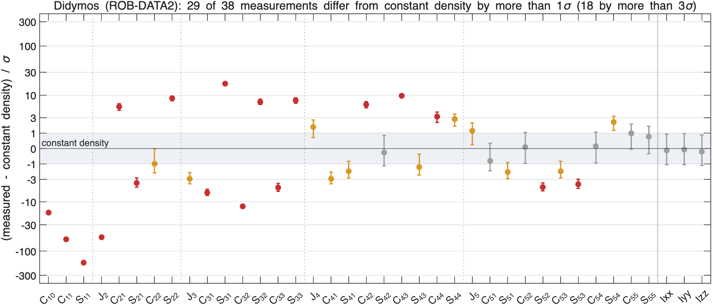
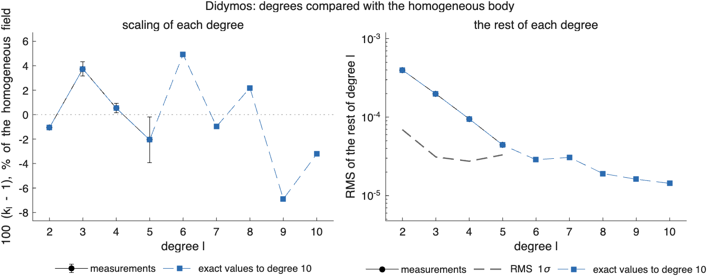
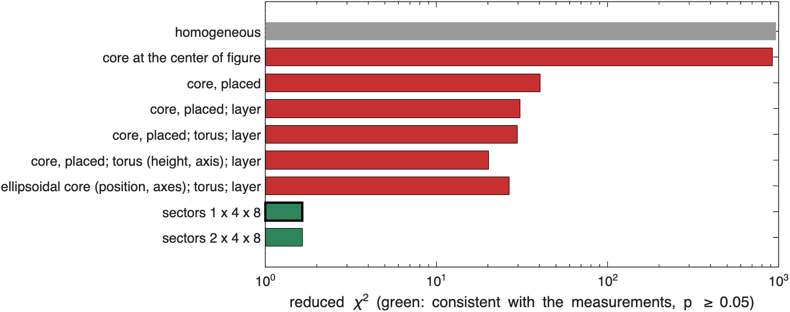
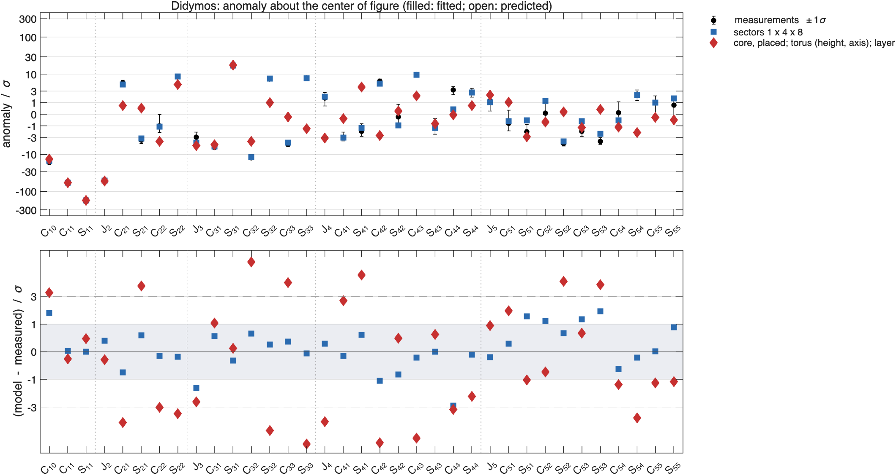
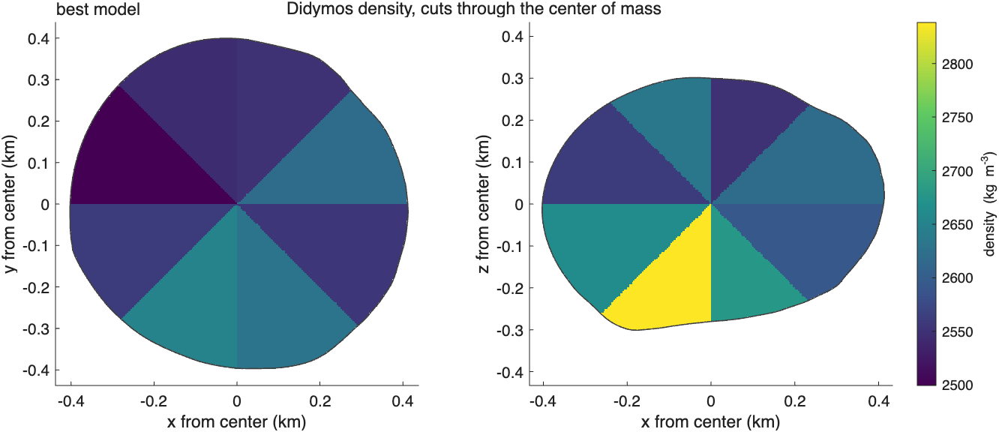
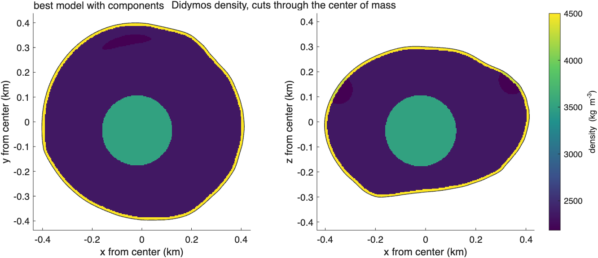
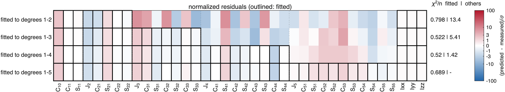
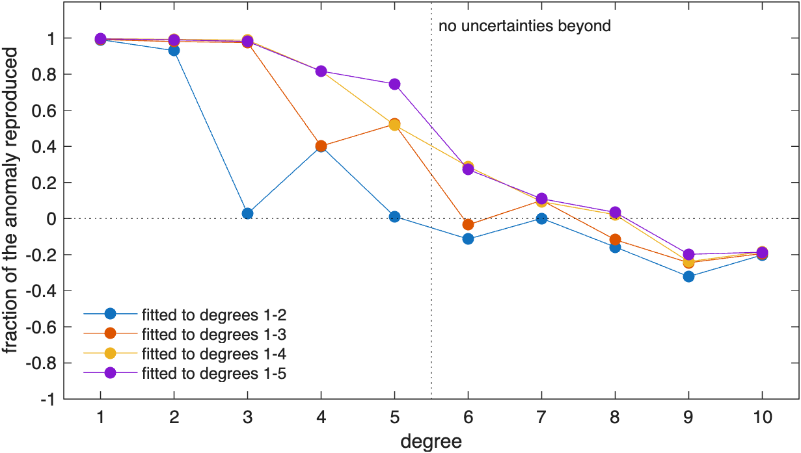
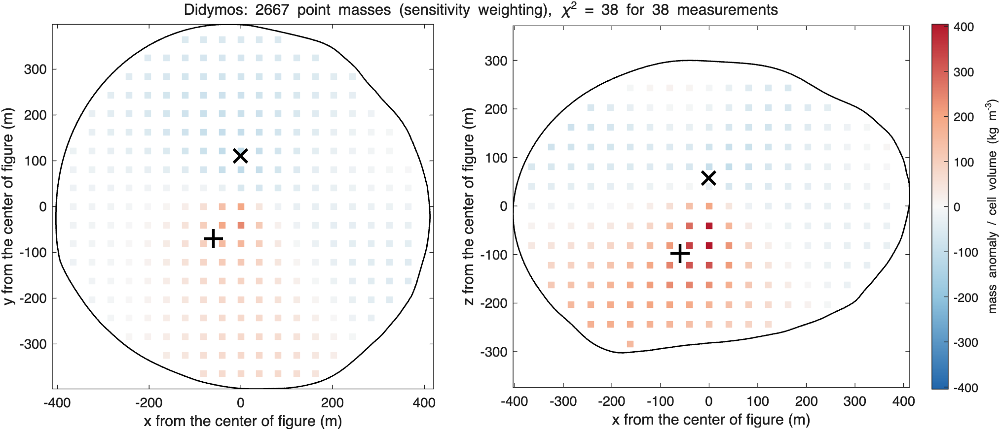
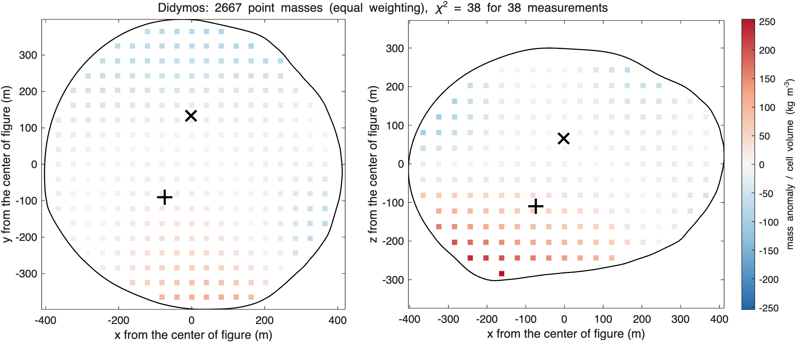

ROB-DATA2: Didymos#
Last edited October 27, 2026
Result. The density of this package changes with direction, not with depth. A grid of 32 sectors (one shell, 4 latitude and 8 longitude bands) fits every coefficient to degree 5 with the smallest variations the measurements accept (reduced 1.65, ): a denser southern part, up to +230 ± 30 kg/m³ toward −x, and slightly lighter northern and +y parts. Fitted to degrees 1–4, it predicts degree 5. No combination of a core, a torus, a layer, an ellipsoid or two spheres comes close (reduced 20 at best): the center of mass is 2.3 m from the center of figure and degree 3 carries most of the signal, which compact bodies near the center cannot produce. The package's mass corresponds to 2605 kg/m³.
Reading#

Didymos (ROB-DATA2): anomaly about the center of figure, degrees 1 to 5
center of mass - center of figure: [-0.51 -1.59 -1.65] m +- [0.01 0.01 0.10] m, |offset| 2.34 m
chi-square of the offset: 3.301e+04 for 3 degrees of freedom
degree RMS anomaly RMS 1-sigma ratio k_l +- 1-sigma residual chi2 / dof
1 1.905e-03 8.022e-05
2 4.430e-04 6.925e-05 0.98931 +- 0.00047 112.1 / 4
3 2.088e-04 3.109e-05 1.03733 +- 0.00591 430.5 / 6
4 9.540e-05 2.744e-05 1.00533 +- 0.00379 166.4 / 8
5 4.525e-05 3.308e-05 0.97939 +- 0.01866 50.6 / 10
one compact mass with the same degrees 1 and 2: NaN% +- NaN% of the mass (NaN kg) at [NaN NaN NaN] m +- [NaN NaN NaN] m from the center of figure
(not converged: the central mass is not distinguished from 0, or no single compact mass fits)- The center of mass is 2.34 m from the center of figure, toward −x, −y and −z, measured to 1 cm in x and y and 10 cm in z: four times the offset of the other two Didymos packages.
- Degree 2 is scaled by only −1.1%, degree 3 by +3.7%: no central condensation, and odd degrees larger than the homogeneous ones. The rest of degree 3 has 431 for 6 degrees of freedom: structure that is not symmetric about the center of figure.
- No single compact mass fits degrees 1 and 2 (
sbtk.interpret.central_massdoes not converge): the center-of-mass offset is too large for the small change of degree 2.

Models#

model chi2/nu p params components (relative density +- 1 sigma, kg/m^3; centers from the center of figure, m)
homogeneous 967 0 0.0 background 2606
core at the center of figure 921 0 1.0 background 2576 | core +463 +- 9 at [0 0 0]
core, placed 40.4 4.7e-267 4.0 background 2562 | core +682 +- 7 at [-31 -94 -10]
core, placed; layer 30.8 2.1e-192 5.0 background 2319 | core +1533 +- 91 at [-13 -43 -24] | regolith +2181 +- 199
core, placed; torus; layer 29.7 3.4e-179 6.0 background 2353 | core +1179 +- 79 at [-17 -55 -23] | torus -81 +- 11 at [0 0 0] | regolith +2147 +- 199
core, placed; torus (height, axis); layer 20.2 3.5e-105 9.0 background 2355 | core +1155 +- 118 at [-20 -36 -37] | torus -169 +- 10 at [0 0 145] | regolith +2145 +- 223
ellipsoidal core (position, axes); torus; layer 26.6 1.7e-143 9.0 background 2358 | core +1155 +- 84 at [-17 -57 -40] | torus -106 +- 12 at [0 0 0] | regolith +2142 +- 174
sectors 1 x 4 x 8 1.65 0.05 22.1 background 2606 | s111 +232 +- 32 | s112 +29 +- 39 | s113 -1 +- 40 | s114 +50 +- 39 | s115 +74 +- 42 | s116 +100 +- 38 | s117 +60 +- 34 | s118 +163 +- 32 | s121 +57 +- 8 | s122 +31 +- 9 | s123 +60 +- 7 | s124 -29 +- 8 | s125 -14 +- 10 | s126 -35 +- 9 | s127 -55 +- 8 | s128 +78 +- 8 | s131 -43 +- 9 | s132 +45 +- 9 | s133 +25 +- 8 | s134 -50 +- 7 | s135 +14 +- 9 | s136 -54 +- 8 | s137 -61 +- 8 | s138 -106 +- 9 | s141 +29 +- 38 | s142 -12 +- 36 | s143 -4 +- 38 | s144 -14 +- 38 | s145 -55 +- 37 | s146 -23 +- 34 | s147 -47 +- 35 | s148 -29 +- 37
sectors 2 x 4 x 8 1.65 0.05 22.2 background 2606 | s111 +8 +- 52 | s112 +4 +- 52 | s113 +3 +- 52 | s114 +4 +- 52 | s115 +4 +- 52 | s116 +5 +- 52 | s117 +6 +- 52 | s118 +8 +- 52 | s121 +14 +- 52 | s122 +8 +- 52 | s123 +6 +- 52 | s124 +6 +- 52 | s125 +8 +- 52 | s126 +8 +- 52 | s127 +9 +- 52 | s128 +14 +- 52 | s131 +2 +- 52 | s132 +3 +- 52 | s133 +3 +- 52 | s134 -1 +- 52 | s135 -2 +- 52 | s136 -3 +- 52 | s137 -3 +- 52 | s138 -0 +- 52 | s141 -0 +- 52 | s142 -0 +- 52 | s143 -0 +- 52 | s144 -1 +- 52 | s145 -1 +- 52 | s146 -2 +- 52 | s147 -2 +- 52 | s148 -1 +- 52 | s211 +241 +- 33 | s212 +35 +- 41 | s213 +5 +- 42 | s214 +53 +- 40 | s215 +74 +- 44 | s216 +101 +- 39 | s217 +60 +- 35 | s218 +167 +- 33 | s221 +59 +- 9 | s222 +34 +- 10 | s223 +61 +- 7 | s224 -30 +- 8 | s225 -15 +- 10 | s226 -37 +- 9 | s227 -57 +- 8 | s228 +78 +- 9 | s231 -44 +- 10 | s232 +46 +- 10 | s233 +26 +- 8 | s234 -51 +- 7 | s235 +12 +- 10 | s236 -58 +- 8 | s237 -65 +- 8 | s238 -109 +- 9 | s241 +28 +- 39 | s242 -11 +- 37 | s243 -3 +- 39 | s244 -17 +- 39 | s245 -60 +- 38 | s246 -28 +- 35 | s247 -54 +- 36 | s248 -35 +- 38
best: sectors 1 x 4 x 8- A core placed by its profile goes 99 m from the center, toward −y (+680 kg/m³): reduced 40. With a layer it moves in to 50 m and the layer becomes denser than the background by 2200 kg/m³ (a dense crust); with a torus whose height and axis are free, 20. Every one of these leaves degree 3 unexplained.
- Compact bodies placed where the point masses put the anomaly (a dense sphere toward −x, −y, −z and a light one toward +y, +z): 27. Caps (a dense south and a light north): 900.
- Sectors: 32 sectors of one shell reach a reduced of 1.65 with the largest regularization that is still consistent; with two shells, 1.65 as well, with the inner shell almost uniform. The measurements want lateral variations; they do not ask for radial ones.



The sector densities (kg/m³ relative to the background; rows from the south pole to the north pole, columns of longitude from −180° to 180° in steps of 45°; 1σ about 35 in the polar rows and 8 in the others):
lat \ lon -180 -135 -90 -45 0 45 90 135
-90..-45 232 29 -1 50 74 100 60 163
-45.. 0 57 31 60 -29 -14 -35 -55 78
0.. 45 -43 45 25 -50 14 -54 -61 -106
45.. 90 29 -12 -4 -14 -55 -23 -47 -29The southern cap is denser everywhere, most toward −x (longitudes ±180° and 135°); the northern half and the +y side (longitudes 45°–135°) are lighter.
How far the model reaches#
fitted to chi2/nu chi2/n fitted chi2/n others
degrees 1-2 2.46 0.798 13.4
degrees 1-3 2.38 0.522 5.41
degrees 1-4 2.01 0.52 1.42
degrees 1-5 1.65 0.689 -
Fraction of each degree's anomaly (exact values) reproduced, 1 - |model - given|^2/|given|^2:
fitted to 1 2 3 4 5 6 7 8 9 10
degrees 1-2 0.99 0.93 0.03 0.40 0.01 -0.11 0.00 -0.16 -0.32 -0.20
degrees 1-3 0.99 0.98 0.98 0.40 0.52 -0.03 0.10 -0.12 -0.24 -0.19
degrees 1-4 1.00 0.99 0.99 0.82 0.52 0.29 0.09 0.02 -0.24 -0.18
degrees 1-5 1.00 0.99 0.98 0.82 0.75 0.27 0.11 0.03 -0.20 -0.19

- Fitted to degrees 1–2 the sectors predict degrees 3–5 poorly ( 13 per coefficient) and reproduce 3% of degree 3; fitted to 1–3, 5.4; fitted to 1–4, they predict degree 5 with 1.4 per coefficient.
- Of the exact values they reproduce 99% of degrees 1–3, 82% of degree 4, 75% of degree 5, 27% of degree 6 and nothing beyond. The sectors' straight edges carry no information about structure at those scales. The model is good to degree 5, the degree the radio-science uncertainties cover.
Point masses#


equal weighting: 2667 points every 40.6 m, lambda 2.56e-08, chi2 38 for 38 measurements; positive 3.77e+09 kg at [-74 -90 -110] m, negative -3.77e+09 kg at [-2 133 66] m
sensitivity weighting: 2667 points every 40.6 m, lambda 1.74, chi2 38 for 38 measurements; positive 4.65e+09 kg at [-60 -70 -98] m, negative -4.65e+09 kg at [-1 111 58] mThe point masses put the mass excess in the lower −y quadrant, centered about 140 m from the center toward (−0.4, −0.5, −0.7), and the deficit toward +y and +z, 125 m out: the same two-sided pattern as the sectors, which neither a core nor a pair of spheres reproduces. The radial profile of the point masses is flat (+88 kg/m³ at the center, −13 near the surface): no core and no crust.